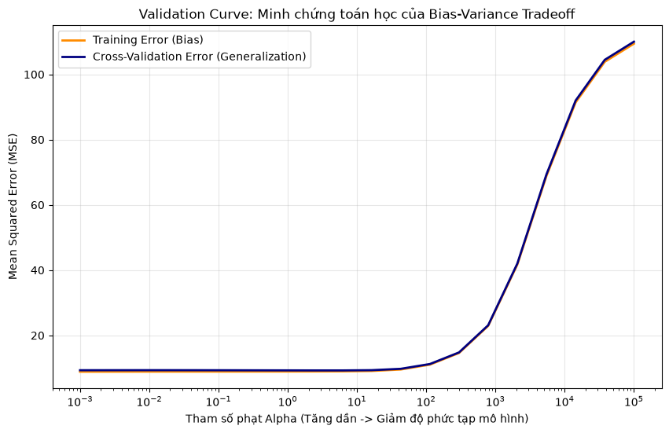
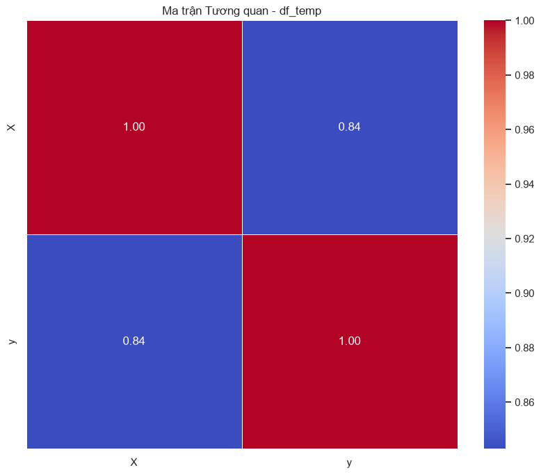
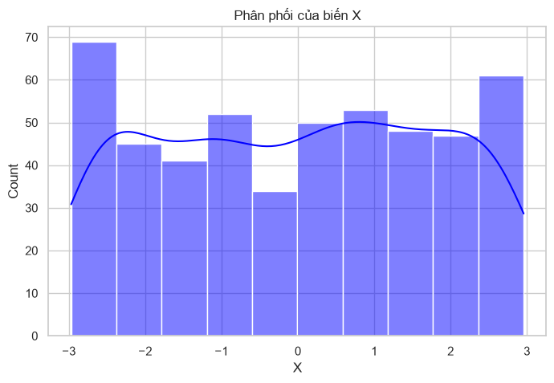

CHƯƠNG 3: TƯ DUY MÔ HÌNH HÓA ĐA BIẾN (MULTIVARIATE MODELING MINDSET)#
3.1. Nền tảng Triết lý: Ranh giới giữa Tương quan và Nhân quả#
3.1.1. Data Generating Process (DGP): Bản chất của Thực tại#
Điểm khởi đầu của mọi nỗ lực phân tích dữ liệu, dù là kinh tế lượng cổ điển hay học máy học sâu hiện đại, không bắt đầu từ những dòng mã lệnh hay những thuật toán tối ưu hóa phức tạp. Nó bắt buộc phải bắt đầu từ một sự khiêm tốn về mặt nhận thức luận (epistemology): những con số vô tri vô giác được lưu trữ trong các bảng tính hay cơ sở dữ liệu không bao giờ là bản thân thực tại. Dữ liệu chỉ là những vệt bóng mờ nhạt, những hệ quả đo lường được của một cỗ máy vĩ đại và bí ẩn đang không ngừng vận hành trong bóng tối. Cỗ máy vô hình đó được giới hàn lâm gọi bằng một thuật ngữ vô cùng trang trọng: Data Generating Process - DGP (Data Generating Process - DGP). Khái niệm DGP ám chỉ toàn bộ các quy luật tự nhiên, các cơ chế vật lý, sinh học, hoặc các nguyên lý kinh tế học hành vi đã đan xen tương tác với nhau để tạo ra những điểm dữ liệu mà chúng ta quan sát được trên màn hình máy tính. Khi chúng ta xây dựng một mô hình toán học, thực chất chúng ta đang thực hiện một nỗ lực tuyệt vọng nhưng vĩ đại nhằm dịch ngược (reverse-engineer) cơ chế bí ẩn của DGP chỉ từ những vệt bóng vỡ vụn mà nó để lại. Sự hiểu biết về DGP là nền tảng triết lý giúp nhà phân tích không bị lạc lối trong mê cung của các phép toán thống kê thuần túy.
Để chính thức hóa ngôn ngữ giao tiếp với DGP, các nhà khoa học đã định chuẩn nó dưới một lăng kính đại số tinh gọn, thâu tóm toàn bộ triết lý của học máy vào một phương trình nền tảng duy nhất:
Trong phương trình tối thượng này, \(Y\) đại diện cho biến mục tiêu mà chúng ta khao khát thấu hiểu hoặc dự báo—có thể là doanh số bán hàng trong tháng tới, rủi ro vỡ nợ của một khách hàng, hoặc tỷ suất sinh lời của một danh mục đầu tư. \(X\) là một ma trận đa chiều, tập hợp tất cả các biến số đầu vào, các tín hiệu hoặc nguyên nhân mà chúng ta tin rằng có quyền năng tác động lên \(Y\). Hai thành phần còn lại, \(f(X)\) và \(\epsilon\), chính là chìa khóa định hình toàn bộ tư duy mô hình hóa. Mỗi thành phần mang một ý nghĩa triết học và toán học hoàn toàn khác biệt, đòi hỏi phương thức xử lý và tư duy riêng biệt từ người làm khoa học dữ liệu.
Thành phần \(f(X)\) đại diện cho phần Tín hiệu (Signal) mang tính hệ thống. Nó là một hàm số toán học thực sự của vũ trụ, lưu trữ cơ chế nhân quả hoặc quy luật tương quan tất định giữa \(X\) và \(Y\). Nếu chúng ta là những vị thần toàn tri, chúng ta sẽ biết chính xác hình dáng toán học của \(f(X)\)—có thể là một đường thẳng bậc nhất, một đường cong phi tuyến phức tạp, hay một siêu mặt phẳng bị đứt gãy không liên tục. Tuy nhiên, loài người vĩnh viễn bị giam cầm trong sự thiếu hiểu biết; chúng ta không bao giờ có thể tiếp cận được hàm \(f(X)\) nguyên thủy. Mục tiêu duy nhất, cao cả nhất của toàn bộ ngành khoa học dữ liệu là sử dụng các thuật toán (từ OLS đơn giản cho đến Random Forest hay Neural Networks) để tạo ra một hàm xấp xỉ \(\hat{f}(X)\) sao cho nó bám sát hình dáng thực sự của \(f(X)\) càng nhiều càng tốt. Sự thành bại của một mô hình hoàn toàn phụ thuộc vào việc hàm xấp xỉ này hội tụ tiệm cận đến mức nào so với quy luật thực tại. Việc lựa chọn lớp hàm xấp xỉ (hồi quy tuyến tính, cây quyết định, hay mạng thần kinh) phản ánh các giả định tiên nghiệm của chúng ta về cấu trúc của \(f(X)\).
Thế nhưng, sự tiệm cận hoàn hảo đó bị phá bĩnh bởi thành phần cuối cùng: \(\epsilon\), tức là Nhiễu (Noise). Nếu \(f(X)\) là trật tự, thì \(\epsilon\) là sự hỗn loạn. Nhiễu bao gồm tất cả những yếu tố ngẫu nhiên, những biến số ngoại cảnh ẩn giấu mà chúng ta không thể thu thập, những sai số do công cụ đo lường, và thậm chí là tính bốc đồng phi lý trí trong hành vi của con người. Nhiễu ngầm định tuân theo một phân phối xác suất với giá trị kỳ vọng (trung bình) bằng không (\(E[\epsilon] = 0\)) và có một phương sai nhất định (irreducible error). Bởi vì bản chất của nhiễu là hoàn toàn ngẫu nhiên và phi cấu trúc, nó không bao giờ lặp lại chính xác quỹ đạo của nó trong tương lai. Sự tồn tại của \(\epsilon\) thiết lập một giới hạn trên tàn nhẫn đối với mọi nỗ lực dự báo: ngay cả khi bạn tìm ra được hàm \(\hat{f}(X)\) giống hệt với hàm thực \(f(X)\) của vũ trụ, dự báo của bạn vẫn sẽ có sai số bằng đúng phương sai của \(\epsilon\). Điều này có nghĩa là sự không chắc chắn là một thuộc tính cố hữu của dữ liệu, không thể bị triệt tiêu bằng bất kỳ thuật toán tối tân nào.
Để làm sâu sắc hơn bản chất toán học của nhiễu, chúng ta cần phân biệt giữa hai trạng thái của phương sai sai số: phương sai đồng nhất (homoscedasticity) và phương sai thay đổi (heteroscedasticity). Trong một DGP lý tưởng, phương sai của \(\epsilon\) cố định đối với mọi giá trị của \(X\), nghĩa là \(Var(\epsilon|X) = \sigma^2\). Tuy nhiên, trong thực tế phân tích kinh tế định lượng, giả định này thường xuyên bị vi phạm. Phương sai của nhiễu thường phình to theo quy mô của các biến độc lập, ví dụ như biến động chi tiêu tiêu dùng sẽ phân tán rộng hơn rất nhiều ở nhóm hộ gia đình có thu nhập cao. Khi đó, \(Var(\epsilon|X) = \sigma^2(X)\), một hàm số phụ thuộc vào đầu vào. Việc bỏ qua cấu trúc phương sai thay đổi này khi ước lượng hàm xấp xỉ \(\hat{f}(X)\) bằng phương pháp bình phương tối thiểu thông thường sẽ không làm cho hệ số bị chệch, nhưng sẽ phá hủy tính tối ưu của nó, khiến các khoảng tin cậy thống kê bị tính toán sai lệch nghiêm trọng, từ đó dẫn đến các kết luận kiểm định giả thuyết không đáng tin cậy.
Việc không thấu hiểu sâu sắc sự phân ly giữa \(f(X)\) và \(\epsilon\) là nguyên nhân dẫn đến thảm họa lớn nhất trong học máy: Overfitting (Học vẹt/Overfitting). Khi một nhà phân tích sở hữu một bộ dữ liệu có kích thước hạn chế nhưng lại sử dụng một thuật toán có dung lượng học hỏi (model capacity) quá khổng lồ, thuật toán đó sẽ không chỉ dừng lại ở việc mô phỏng cấu trúc của \(f(X)\). Thay vào đó, nó sẽ tham lam bẻ cong các ranh giới toán học của mình, luồn lách qua từng điểm dữ liệu để học thuộc lòng luôn cả những dao động hỗn loạn của nhiễu \(\epsilon\). Thuật toán đã nhầm lẫn sự ngẫu nhiên thành quy luật tất yếu. Như Hastie et al. (2009) đã phân tích trong khung lý thuyết về sự đánh đổi giữa Bias và Variance, việc cố tình học thuộc lòng nhiễu sẽ làm giảm sai số trên tập huấn luyện xuống gần bằng không, nhưng lại phá hủy hoàn toàn năng lực tổng quát hóa (generalization) của mô hình. Khi mô hình bị đưa vào ứng dụng thực tế—nơi mà một tập hợp các nhiễu \(\epsilon\) hoàn toàn mới và khác biệt xuất hiện—mô hình sẽ sụp đổ thảm hại vì nó đang cố gắng dự báo dựa trên một bản vẽ của những bóng ma quá khứ không bao giờ quay lại. Ngược lại, nếu chúng ta ép mô hình quá đơn giản, nó sẽ không học được ngay cả cấu trúc hệ thống \(f(X)\), dẫn đến Underfitting (Underfitting), tức là bỏ sót các tín hiệu quan trọng từ thực tế.
Trong bối cảnh dữ liệu kinh tế định lượng, việc mô hình hóa thực chất là nỗ lực tiệm cận DGP lịch sử. Nền kinh tế không phải là một phòng thí nghiệm vật lý khép kín nơi các thí nghiệm có thể được lặp đi lặp lại trong những điều kiện được kiểm soát hoàn hảo. Dữ liệu kinh tế là dữ liệu quan sát được (observational data), được sinh ra từ các hành vi phức tạp của con người và các cú sốc chính sách. Do đó, DGP trong kinh tế học luôn thay đổi theo thời gian (non-stationary DGP). Một mô hình được huấn luyện dựa trên DGP của thập kỷ trước có thể hoàn toàn mất đi giá trị sử dụng trong bối cảnh hiện tại do sự thay đổi trong cấu trúc hành vi tiêu dùng hoặc khung pháp lý. Triết lý DGP nhắc nhở nhà phân tích rằng việc đọc hiểu các chỉ số thống kê của mô hình trên dữ liệu quá khứ chỉ là bước khởi đầu; nhiệm vụ quan trọng hơn là phải liên tục đánh giá xem liệu các cơ chế sinh dữ liệu ngầm định có còn giữ vững tính nhất quán khi mô hình được triển khai vào các kịch bản thực tế tương lai hay không. Như Pearl (2009) nhấn mạnh, nếu không có một giả định vững chắc về cơ chế DGP, mọi nỗ lực phân tích số liệu đều chỉ dừng lại ở việc mô tả quá khứ thay vì chỉ đường cho tương lai.
3.1.2. Đồ thị nhân quả (Directed Acyclic Graphs - DAG): Ngôn ngữ của cấu trúc#
Một khi chúng ta đã thừa nhận sự tồn tại của DGP, chúng ta phải đối mặt với một sự thật cay đắng mà khoa học thống kê cổ điển đã né tránh trong suốt nhiều thập kỷ: Tương quan không bao giờ là Nhân quả. Một thuật toán học máy, dù sở hữu sức mạnh điện toán vô song, về bản chất cốt lõi vẫn chỉ là một cỗ máy nhận diện mẫu hình (pattern recognition machine) được sinh ra để săn lùng những sự tương quan toán học thuần túy. Nó hoàn toàn bất lực trong việc trả lời câu hỏi vì sao một mối liên hệ lại tồn tại. Nếu chúng ta chỉ cung cấp cho mô hình những biến số cô lập mà không cung cấp cho nó tri thức về mạng lưới nguyên lý vận hành của bối cảnh thực tế, mô hình sẽ dễ dàng bị đánh lừa bởi những ảo ảnh thống kê. Để vượt qua bức tường của sự tương quan và bước vào vương quốc của suy diễn nhân quả (Causal Inference), chúng ta cần một loại ngôn ngữ mới, một hệ thống ký hiệu có khả năng mã hóa các giả định của chúng ta về DGP trước cả khi bất kỳ một dòng mã lập trình hay một công thức toán học nào được viết ra. Khung lý luận vĩ đại đó, được khởi xướng bởi Judea Pearl, chính là Directed Acyclic Graph - DAG (Đồ thị Có hướng Không có Chu trình).
DAG không phải là một sơ đồ mô tả trực quan thông thường; nó là một cấu trúc dữ liệu hình học cực kỳ nghiêm ngặt nhằm hiện thực hóa các dòng chảy của thông tin và quan hệ nhân quả. Trong vũ trụ của DAG, mỗi một biến số được đại diện bởi một Điểm nút (Node). Những Điểm nút này được kết nối với nhau bằng các Cạnh có hướng (Directed Edges), tức là những mũi tên chỉ rõ hướng đi của sự tác động nguyên nhân - kết quả. Mũi tên bắn ra từ Điểm \(X\) đâm thẳng vào Điểm \(Y\) (\(X \rightarrow Y\)) mang một ý nghĩa can thiệp thực tế sâu sắc: Nếu ta thay đổi giá trị của \(X\), thì hình dáng phân phối xác suất của \(Y\) cũng sẽ chịu sự thay đổi theo. Đặc tính không có chu trình (Acyclic) là một đòi hỏi bắt buộc về mặt logic và thời gian vật lý: bạn không thể xuất phát từ một nút, đi theo hướng của các mũi tên rồi vòng ngược trở lại chính nút đó. Quy tắc này đảm bảo rằng thời gian luôn trôi về phía trước, loại bỏ mọi nghịch lý vòng lặp nhân quả nơi kết quả lại quay ngược trở lại sinh ra chính nguyên nhân tạo ra nó.
Hãy đặt thứ vũ khí lý thuyết này vào một bối cảnh cụ thể: Đánh giá hiệu quả của một chiến dịch Marketing để thúc đẩy doanh thu. Một nhà quản lý ngây thơ sẽ chỉ vẽ hai điểm nút: Chi phí cho chiến dịch (\(X\)) và Doanh số bán hàng (\(Y\)), kèm theo một mũi tên nối trực tiếp từ \(X\) sang \(Y\). Tuy nhiên, một nhà phân tích được trang bị tư duy DAG sẽ nhìn thấy một mạng lưới phức tạp hơn rất nhiều. Họ sẽ phải vẽ thêm các Điểm nút mới như Yếu tố mùa vụ (\(Z\)), Năng lực tài chính của khách hàng (\(W\)), hoặc Mức độ nhận diện thương hiệu (\(M\)). Những mũi tên sẽ bắt đầu phóng ra chằng chịt: Yếu tố mùa vụ (\(Z\)) chĩa mũi tên vào cả Chi phí Marketing \(X\) (vì ban lãnh đạo thích đổ tiền quảng cáo vào dịp lễ tết) và Doanh số \(Y\) (vì người dân tự nhiên mua sắm nhiều hơn vào dịp lễ). Việc vẽ ra mạng lưới này buộc các nhà phân tích phải đối mặt với các giả định của chính mình một cách trần trụi và tường minh, ngăn chặn việc đưa ra các kết luận sai lầm.
Quyền năng tối thượng của một đồ thị DAG không chỉ nằm ở những mũi tên mà nó phác họa ra, mà nằm ở chính những mũi tên mà nó quyết định bỏ qua (omitted edges). Khi chúng ta từ chối vẽ một mũi tên kết nối hai Điểm nút, chúng ta đang đưa ra một lời tuyên bố khoa học cực kỳ mạnh mẽ về sự Độc lập có điều kiện (Conditional Independence). Sự thiếu vắng của mũi tên khẳng định rằng, trong kiến trúc của DGP, hai hiện tượng này hoàn toàn không có cơ chế trực tiếp nào để truyền tín hiệu cho nhau. Để phân tích sâu sắc dòng chảy thông tin trên DAG, chúng ta phải hiểu khái niệm d-separation (sự phân tách hướng) do Pearl đề xuất. Khái niệm này cho phép chúng ta xác định xem liệu hai biến số bất kỳ có độc lập với nhau hay không dưới một tập hợp các biến kiểm soát cho trước. D-separation dựa trên việc phân tích ba loại cấu trúc ngã ba cơ bản trên đồ thị:
Cấu trúc thứ nhất là Chuỗi liên kết (Chain/Mediator) có dạng \(A \rightarrow B \rightarrow C\). Trong cấu trúc này, thông tin chảy từ \(A\) qua \(B\) đến \(C\). Nếu chúng ta không kiểm soát \(B\), thông tin sẽ chảy tự do và tạo ra tương quan giữa \(A\) và \(C\). Nhưng nếu chúng ta khóa hay kiểm soát \(B\), dòng chảy thông tin bị chặn đứng hoàn toàn, làm cho \(A\) và \(C\) độc lập với nhau. Cấu trúc thứ hai là Ngã ba phân kỳ (Fork/Confounder) có dạng \(A \leftarrow B \rightarrow C\). Ở đây, \(B\) là nguyên nhân chung của cả \(A\) và \(C\). Nếu không kiểm soát \(B\), sự biến thiên của \(B\) sẽ truyền đi đồng thời đến cả hai nhánh, tạo ra tương quan giả giữa \(A\) và \(C\). Việc kiểm soát \(B\) sẽ chặn dòng chảy thông tin này, bít kín con đường cửa sau. Cấu trúc thứ ba là Ngã ba hội tụ (Collider) có dạng \(A \rightarrow B \leftarrow C\). Đây là cấu trúc đặc biệt nhất: mặc định khi không kiểm soát \(B\), con đường bị chặn và \(A\) độc lập với \(C\). Tuy nhiên, nếu chúng ta dại dột kiểm soát \(B\) (hoặc bất kỳ hậu duệ nào của \(B\)), chúng ta sẽ vô tình mở ra con đường thông tin, tạo ra tương quan giả giữa \(A\) và \(C\), một hiện tượng được gọi là nghịch lý Berkson.
Nếu không có bộ khung triết học cứng rắn này từ DAG, bất kỳ nỗ lực nào ném toàn bộ các biến số vào một mô hình hồi quy đa biến hay một mạng thần kinh với hi vọng mô hình sẽ tự tìm ra quy luật nhân quả cũng đều là những hành động mù quáng và nguy hiểm tột độ. Nó giống như việc chúng ta cố gắng lái xe dựa trên bản đồ của một thành phố khác. DAG cung cấp một công cụ toán học trực quan để xác định chính xác biến nào cần được đưa vào mô hình hồi quy và biến nào tuyệt đối phải bị loại trừ để bảo toàn tính không chệch của hệ số nhân quả. Theo tài liệu nghiên cứu nhân quả của Morgan & Winship (2015), việc thiết lập DAG là bước đi bắt buộc để định hình chiến lược kiểm soát biến số, biến các giả định triết học mơ hồ thành các tiêu chuẩn kiểm định thực nghiệm có thể đo lường và bác bỏ được.
3.1.3. Phân biệt các loại biến qua lăng kính Xác suất có điều kiện#
Để chuyển đổi sức mạnh của DAG từ những mũi tên hình học trực quan thành các công thức toán học có thể tính toán thực nghiệm, chúng ta phải sử dụng ngôn ngữ của Xác suất có điều kiện (Conditional Probability). Trong không gian xác suất, sự thay đổi của một phân phối \(P(Y)\) dưới sự chi phối của một hay nhiều biến số khác chính là cách chúng ta định lượng các mối liên hệ thống kê. Nếu xác suất xảy ra của \(Y\) thay đổi khi chúng ta biết thông tin về \(X\)—nghĩa là \(P(Y|X) \neq P(Y)\)—chúng ta kết luận rằng \(X\) và \(Y\) có sự phụ thuộc thống kê. Tuy nhiên, sự phụ thuộc này là một mớ hỗn loạn chứa đựng cả nhân quả thực sự lẫn tương quan giả. Để cô lập và phân biệt rạch ròi bản chất toán học của ba loại biến cốt lõi trong hệ thống: Nguyên nguyên nhân (Cause), Trung gian (Mediator) và Biến nhiễu (Confounder), chúng ta bắt buộc phải đưa vào một biến kiểm soát thứ ba, gọi là \(Z\), và khảo sát xác suất \(P(Y|X, Z)\).
Loại biến thứ nhất là Nguyên nhân trực tiếp (Cause). Về mặt đồ thị DAG, đây là một mũi tên thẳng tắp nối từ \(X\) đến \(Y\). Nếu \(X\) là ngân sách chạy chiến dịch quảng cáo và \(Y\) là lượng truy cập trang web, sự gia tăng ngân sách sẽ trực tiếp kích hoạt sự gia tăng lượng truy cập. Để định nghĩa chính xác tác động nhân quả này độc lập với tương quan, Pearl đã giới thiệu toán tử can thiệp \(do(X)\). Khi chúng ta quan sát dữ liệu thực tế, chúng ta chỉ tiếp cận được xác suất có điều kiện thông thường \(P(Y|X)\), tức là xác suất của \(Y\) khi ta quan sát thấy \(X\) nhận một giá trị nào đó. Tuy nhiên, xác suất này bị ô nhiễm bởi các con đường cửa sau. Ngược lại, xác suất can thiệp \(P(Y|do(X))\) đại diện cho phân phối của \(Y\) khi chúng ta chủ động can thiệp vật lý để áp đặt giá trị cho \(X\) (ví dụ như việc thiết lập một thử nghiệm ngẫu nhiên). Đối với một nguyên nhân trực tiếp thuần túy không bị ảnh hưởng bởi biến nhiễu, tác động can thiệp sẽ tương thích với tác động quan sát, nhưng điều này cực kỳ hiếm khi xảy ra trong thế giới thực.
Sự phức tạp bắt đầu leo thang khi chúng ta đối mặt với loại biến thứ hai: Biến Trung gian (Mediator). Trên sa bàn DAG, cấu trúc của Mediator hiện lên như một chuỗi dây chuyền phản ứng: \(X \rightarrow Z \rightarrow Y\). Quay lại ví dụ Marketing, \(X\) là Chi phí quảng cáo, \(Z\) là Mức độ nhận diện thương hiệu được sinh ra từ quảng cáo, và \(Y\) là Doanh số cuối cùng. Biến \(Z\) không phải là nguyên nhân gốc rễ, mà nó đóng vai trò là một cơ chế truyền tải (mechanism) mang tín hiệu từ \(X\) để kích hoạt \(Y\). Điểm kỳ diệu và nguy hiểm nhất của toán học xác suất nằm ở đây: Nếu chúng ta quyết định thêm biến trung gian \(Z\) vào mô hình hồi quy (nghĩa là chúng ta đang tính toán \(P(Y|X, Z)\) thay vì \(P(Y|X)\)), biến \(Z\) sẽ ngay lập tức hấp thụ toàn bộ sức mạnh nhân quả của chuỗi. Cụ thể, khi bạn đã biết chính xác Mức độ nhận diện thương hiệu \(Z\), thì việc cung cấp thêm thông tin về Chi phí quảng cáo \(X\) sẽ không mang lại bất kỳ một giá trị dự báo mới mẻ nào cho Doanh số \(Y\). Đẳng thức toán học \(P(Y|X, Z) = P(Y|Z)\) sẽ xảy ra, tuyên bố rằng \(Y\) và \(X\) đã trở nên độc lập có điều kiện khi đã biết \(Z\) (\(X \perp Y | Z\)). Nếu một nhà phân tích ngây thơ nhồi nhét cả biến Mediator vào mô hình hồi quy để cố gắng tăng độ chính xác, thuật toán OLS sẽ đánh cắp hệ số từ \(X\) và chuyển toàn bộ công trạng cho \(Z\). Hậu quả là, mô hình sẽ báo cáo rằng hệ số của Chi phí quảng cáo bằng không, khiến nhà quản lý đưa ra quyết định sai lầm thảm họa là cắt bỏ toàn bộ ngân sách Marketing vì tưởng rằng nó vô dụng.
Thực thể thứ ba, bóng ma đáng sợ nhất trong mọi nghiên cứu dữ liệu, chính là Biến Nhiễu (Confounder). Khác với Mediator nằm trên đường truyền, Confounder tọa lạc tại một vị trí thượng nguồn, phóng ra hai mũi tên cùng lúc nhắm vào cả \(X\) và \(Y\), tạo ra cấu trúc phân kỳ: \(X \leftarrow Z \rightarrow Y\). Hãy xét đến yếu tố Yếu tố mùa vụ lễ tết (\(Z\)). Dịp lễ tết (\(Z\)) ép buộc bộ phận Marketing phải vung tiền vào quảng cáo (\(X\)). Cùng lúc đó, lễ tết (\(Z\)) cũng tạo ra tâm lý hưng phấn khiến khách hàng đổ xô đi mua sắm, đẩy doanh số (\(Y\)) lên cao. Bởi vì cả \(X\) và \(Y\) đều bị giật dây bởi cùng một thế lực ngầm \(Z\), chúng sẽ hiển thị một sự đồng biến hoàn hảo. Nếu nhà phân tích chỉ khảo sát \(P(Y|X)\), họ sẽ hân hoan tin rằng chiến dịch quảng cáo đã tạo ra kỳ tích doanh thu. Sự tương quan khổng lồ này hoàn toàn là một trò lừa bịp của toán học, được gọi là Tương quan giả (Spurious correlation). Trong ngôn ngữ của Causal Inference, cấu trúc \(X \leftarrow Z \rightarrow Y\) đã mở ra một Cửa sau (Backdoor path). Thông tin thống kê từ \(Y\) đã rò rỉ ngược qua cửa sau, đi xuyên qua \(Z\), và trộn lẫn vào \(X\), tạo ra ảo giác về một luồng nhân quả trực tiếp. Chừng nào Cửa sau chưa bị khóa chặt, chừng đó toàn bộ các ước lượng hồi quy của mô hình đều mang sự chệch khổng lồ và vô giá trị.
Phương pháp duy nhất để khóa chặt Cửa sau, tiêu diệt sự Tương quan giả, là phải nhận diện được Confounder thông qua đồ thị DAG và đưa nó vào mô hình như một biến kiểm soát. Bằng hành động phân tầng (Stratification) hoặc đưa \(Z\) vào làm biến đầu vào, chúng ta ép buộc mô hình phải so sánh \(X\) và \(Y\) trong điều kiện \(Z\) được giữ cố định. Một khi \(Z\) không còn biến thiên, Cửa sau bị bít kín hoàn toàn. Chỉ khi đó, chúng ta mới có thể biến đổi xác suất can thiệp bằng Công thức điều chỉnh cửa sau (Backdoor Adjustment Formula):
Công thức vĩ đại này cho phép chúng ta tính toán được phân phối can thiệp \(P(Y|do(X))\)—thứ vốn dĩ chỉ có thể đo lường được bằng các thử nghiệm ngẫu nhiên tốn kém—chỉ bằng cách sử dụng dữ liệu quan sát thông thường của \(P(Y|X, Z)\) và \(P(Z)\). Đây chính là chiếc chìa khóa vàng giải phóng các nhà kinh tế học khỏi sự bế tắc của dữ liệu quan sát. Bằng cách kiểm soát đúng biến nhiễu \(Z\) để đóng con đường cửa sau, xác suất có điều kiện \(P(Y|X, Z)\) mới thực sự phản ánh tác động nhân quả thuần khiết và chân thực của \(X\) lên \(Y\), giúp các định chế tài chính đưa ra các quyết định chính sách tín dụng hoặc đầu tư dựa trên những cơ sở khoa học vững chắc.
Cuối cùng, chúng ta cần thảo luận về một loại biến vô cùng nguy hiểm nhưng thường bị nhầm lẫn với Confounder: Biến va chạm (Collider). Cấu trúc của Collider được biểu diễn bằng hai mũi tên cùng chỉ vào một biến số chung: \(X \rightarrow Z \leftarrow Y\). Hãy tưởng tượng bài toán phê duyệt hồ sơ tín dụng tại một định chế tài chính. \(X\) là Điểm tín dụng lịch sử của khách hàng, \(Y\) là Khả năng tạo thu nhập tự thân của họ, và \(Z\) là quyết định Phê duyệt hồ sơ. Cả \(X\) và \(Y\) đều đóng vai trò là nguyên nhân trực tiếp dẫn đến quyết định phê duyệt \(Z\). Trong tổng dân số, Điểm tín dụng và Khả năng tạo thu nhập có thể hoàn toàn độc lập với nhau (\(P(X, Y) = P(X)P(Y)\)). Tuy nhiên, nếu nhà phân tích chỉ thu thập dữ liệu từ tập khách hàng đã được phê duyệt (nghĩa là chúng ta điều kiện hóa trên \(Z = 1\)), một tương quan âm giả tạo sẽ xuất hiện giữa \(X\) và \(Y\). Cụ thể, trong số những người được phê duyệt, nếu một khách hàng có Điểm tín dụng \(X\) cực thấp, chúng ta có thể suy đoán gần như chắc chắn rằng họ phải sở hữu một Khả năng tạo thu nhập \(Y\) cực kỳ xuất sắc để bù đắp lại, và ngược lại. Đẳng thức xác suất \(P(Y|X, Z) \neq P(Y|Z)\) sẽ xảy ra, chứng minh rằng việc điều kiện hóa trên một Collider đã vô tình kết nối hai biến số độc lập ban đầu, tạo ra một mối liên kết giả tạo. Đây chính là bài học sâu sắc của tư duy đa biến: không phải cứ đưa thêm biến vào mô hình hồi quy là tốt; việc kiểm soát sai một Collider sẽ làm ô nhiễm toàn bộ hệ thống ước lượng và đưa ra những kiến giải hoàn toàn sai lệch về thực tế.
3.2. Sự Phân Ly Đại Số: Truy tìm Chân lý (Causal) và Tối ưu Hữu dụng (Predictive)#
3.2.1. Triết lý Causal Inference: Truy tìm hệ số \(\beta\) không chệch#
Sự phân ly giữa triết lý Giải thích (Explanation) và Dự báo (Prediction) đại diện cho một vết nứt sâu sắc về mặt nhận thức luận trong khoa học dữ liệu hiện đại. Dù cả hai hướng tiếp cận đều sử dụng chung một hộp công cụ toán học và thống kê, mục tiêu tối thượng và tiêu chí đánh giá sự thành bại của chúng lại nằm ở hai thái cực hoàn toàn khác biệt. Hiểu sai hoặc nhầm lẫn giữa hai hệ tư tưởng này là nguyên nhân cốt lõi dẫn đến việc xây dựng các mô hình vô hại trong phòng thí nghiệm nhưng lại mang sức tàn phá khôn lường khi đưa vào vận hành thực tế. Triết lý Giải thích, đại diện tiêu biểu bởi khung phân tích Causal Inference (Suy diễn Nhân quả), đặt mục tiêu cao nhất vào việc bóc tách bản chất cơ học của vũ trụ. Ở đây, nhà phân tích không bận tâm đến việc mô hình có giải thích được từng biến động nhỏ của tập dữ liệu hay không. Khát vọng duy nhất của họ là tìm ra giá trị chân lý của ma trận hệ số \(\beta\) không chệch (unbiased). Hệ số này là một thông số cấu trúc, trả lời cho một câu hỏi mang tính can thiệp: Nếu ta dùng sức mạnh chính sách để ép buộc một biến đầu vào thay đổi một đơn vị, thì biến mục tiêu sẽ phản ứng lại bao nhiêu đơn vị trong điều kiện các yếu tố khác được giữ cố định? Đây là nền tảng sống còn cho việc hoạch định chính sách kinh tế vĩ mô và chiến lược phát triển dài hạn của doanh nghiệp.
Để hiểu rõ nguồn gốc lịch sử của sự phân tách này, chúng ta cần quay ngược thời gian về bài luận kinh điển của Leo Breiman vào năm 2001 mang tên ‘Statistical Modeling: The Two Cultures’ (Mô hình hóa Thống kê: Hai Nền văn hóa). Breiman đã vạch rõ ranh giới giữa một bên là văn hóa mô hình dữ liệu (Data Modeling Culture)—được kế thừa bởi các nhà thống kê cổ điển, những người luôn giả định dữ liệu tuân theo một mô hình toán học định sẵn như hồi quy tuyến tính—và một bên là văn hóa thuật toán (Algorithmic Modeling Culture)—tiền thân của ngành học máy hiện đại, coi thiên nhiên là một hộp đen bí ẩn có cấu trúc không thể biết trước và chỉ tập trung vào việc tìm kiếm các thuật toán để dự báo chính xác hành vi của hộp đen đó. Trong bối cảnh phân tích kinh tế định lượng, sự phân chia của Breiman hiển hiện như một cuộc đối thoại không hồi kết giữa các nhà kinh tế lượng truyền thống và các kỹ sư khoa học dữ liệu. Nhà kinh tế lượng sẵn sàng chấp nhận một mô hình đơn giản, thậm chí có độ chính xác dự báo thấp, miễn là các giả định thống kê được thỏa mãn để đảm bảo các hệ số ước lượng mang ý nghĩa nhân quả tinh khiết. Ngược lại, kỹ sư khoa học dữ liệu sẵn sàng đánh đổi toàn bộ tính năng giải thích để đổi lấy một mô hình hộp đen có sai số dự báo tối thiểu. Sự mâu thuẫn này không thể được hòa giải bằng toán học thuần túy, vì nó xuất phát từ sự khác biệt trong mục tiêu sử dụng cuối cùng của mô hình.
Ngược lại hoàn toàn với Causal Inference, triết lý Dự báo (Predictive Modeling) hay Machine Learning mang một lăng kính thực dụng thuần túy của một kỹ sư. Đối với họ, ý nghĩa vật lý hay khả năng diễn giải của các hệ số \(\beta\) không phải là mối quan tâm hàng đầu. Họ sẵn sàng sử dụng các cấu trúc phi tuyến phức tạp như Deep Learning, nơi mà các hệ số liên kết bị chôn vùi trong hàng triệu nút thần kinh hộp đen không thể giải thích. Mệnh lệnh tối cao của người làm dự báo là tối thiểu hóa sai số ngoài mẫu (Out-of-sample loss) trên những luồng dữ liệu hoàn toàn mới lạ mà mô hình chưa từng được tiếp xúc trong giai đoạn huấn luyện. Sự thành công của họ được định nghĩa bằng khả năng tổng quát hóa, tức là mức độ chính xác khi dự phóng tương lai dựa trên các mẫu hình thu được từ quá khứ. Việc bóp méo hay làm chệch các hệ số trong mẫu không phải là vấn đề, miễn là dự báo cuối cùng mang lại hiệu quả kinh tế tối ưu. Sự khác biệt triết học này quyết định toàn bộ quy trình thu thập dữ liệu, lựa chọn mô hình và đánh giá hiệu năng mà chúng ta sẽ phân tích chi tiết.
3.2.2. Omitted Variable Bias (Omitted Variable Bias) và Endogeneity (Endogeneity)#
Để thấu hiểu sự mong manh của việc tìm kiếm chân lý nhân quả và cách thức tương quan giả đánh lừa các mô hình thống kê, chúng ta bắt buộc phải mổ xẻ toán học lỗi hệ thống nghiêm trọng nhất trong hồi quy đa biến: Omitted Variable Bias - OVB (Omitted Variable Bias). OVB xảy ra khi chúng ta bỏ quên không đưa một biến giải thích quan trọng vào mô hình hồi quy, mà biến bị bỏ quên này lại có mối tương quan đồng thời với cả biến độc lập đang nghiên cứu lẫn biến phụ thuộc mục tiêu. Hãy giả định rằng, trong Data Generating Process nguyên thủy của vũ trụ, biến kết quả \(Y\) thực sự bị chi phối bởi hai biến đầu vào \(X_1\) và \(X_2\) theo phương trình ma trận sau đây:
Trong đó, \(X_1\) và \(X_2\) là các ma trận dữ liệu có kích thước tương ứng, \(\beta_1\) và \(\beta_2\) là các véc-tơ hệ số tác động chân thực của vũ trụ, và \(\epsilon\) là véc-tơ nhiễu ngẫu nhiên tuân thủ giả định Gauss-Markov với giá trị kỳ vọng bằng không (\(E[\epsilon] = 0\)). Bây giờ, hãy đặt tình huống một nhà phân tích thiếu dữ liệu hoặc không nhận diện được vai trò của \(X_2\), đã tiến hành xây dựng một mô hình hồi quy hạn chế chỉ sử dụng duy nhất biến \(X_1\) để giải thích cho \(Y\):
Áp dụng phương pháp bình phương tối thiểu thông thường (OLS), véc-tơ ước lượng \(\hat{\beta}_1\) được tính toán bằng công thức chiếu trực giao quen thuộc:
Để khảo sát tính chất thống kê của ước lượng này dưới lăng kính kỳ vọng toán học, chúng ta tiến hành thế phương trình DGP thực sự của vũ trụ vào công thức hồi quy hạn chế:
Tiến hành nhân phân phối các số hạng trong ngoặc, chúng ta thu được:
Bởi vì \((X_1^T X_1)^{-1} X_1^T X_1\) rút gọn bằng ma trận đơn vị \(I\), phương trình đơn giản hóa thành:
Lấy kỳ vọng toán học hai vế với giả định nhiễu độc lập \(E[\epsilon|X_1] = 0\), chúng ta đi đến công thức tối thượng của Omitted Variable Bias:
Phương trình này chứa đựng một thông điệp toán học vô cùng tàn nhẫn đối với những ai muốn tìm kiếm nhân quả từ các ước lượng thô. Hệ số mà máy tính trả về (\(E[\hat{\beta}_1]\)) hoàn toàn không phải là tác động chân thực \(\beta_1\). Nó đã bị ô nhiễm bởi một thành phần thiên lệch khổng lồ có giá trị bằng tích số \((X_1^T X_1)^{-1} X_1^T X_2 \beta_2\). Hãy mổ xẻ từng thành phần trong khối u thiên lệch này: thành phần \((X_1^T X_1)^{-1} X_1^T X_2\) chính là ma trận hệ số hồi quy khi chúng ta chạy mô hình phụ để dự báo biến bị bỏ quên \(X_2\) dựa trên biến quan sát \(X_1\). Nó đại diện cho mức độ tương quan tuyến tính giữa hai chiều đặc trưng này. Thành phần \(\beta_2\) phản ánh sức mạnh tác động thực tế của biến bị bỏ sót lên biến mục tiêu \(Y\). Thiên lệch OVB chỉ biến mất khi và chỉ khi một trong hai điều kiện sau được thỏa mãn: hoặc là biến bị bỏ sót hoàn toàn không có tác động lên \(Y\) (tức là \(\beta_2 = 0\)), hoặc là hai biến đầu vào hoàn toàn vuông góc (độc lập) với nhau trong không gian vector (tức là \(X_1^T X_2 = 0\)).
Hãy minh họa công thức trừu tượng này bằng một ví dụ kinh tế học kinh điển: đánh giá tác động của số năm Giáo dục (\(X_1\)) lên mức Lương nhận được (\(Y\)). Đây là bài toán trung tâm của kinh tế học lao động. Một mô hình đơn giản hồi quy Lương theo số năm Giáo dục sẽ luôn trả về một hệ số dương và có ý nghĩa thống kê rất mạnh. Tuy nhiên, một nhân tố ẩn giấu cực kỳ quan trọng thường bị bỏ quên trong mô hình này chính là Năng lực bẩm sinh (\(X_2\)) của cá nhân. Năng lực bẩm sinh của một con người rõ ràng là nguyên nhân thúc đẩy họ có xu hướng theo đuổi học vấn cao hơn (\(X_1^T X_2 > 0\)), và cùng lúc đó, năng lực bẩm sinh cũng giúp họ làm việc hiệu quả hơn để nhận mức lương cao hơn (\(\beta_2 > 0\)). Khi chúng ta bỏ sót Năng lực bẩm sinh ra ngoài mô hình, thiên lệch OVB sẽ mang dấu dương (\(+ (X_1^T X_1)^{-1} X_1^T X_2 \beta_2 > 0\)). Kết quả là hệ số hồi quy của Giáo dục thu được từ OLS sẽ bị thổi phồng lên rất nhiều so với thực tế. Mô hình đã gán ghép sai lệch toàn bộ phần năng lực tự thân của cá nhân cho số năm ngồi dưới mái nhà đào tạo. Nếu chính phủ dựa vào hệ số bị thổi phồng này để đưa ra quyết định đầu tư ngân sách khổng lồ kéo dài số năm học bắt buộc với hi vọng tăng năng suất lao động quốc gia, chính sách đó sẽ thất bại thảm hại vì đã can thiệp vào một mối liên hệ tương quan giả.
Ý nghĩa hình học của OVB có thể được mô tả sinh động thông qua phép chiếu trực giao trong không gian vector đa chiều. Hãy tưởng tượng véc-tơ mục tiêu \(Y\) là một mũi tên lơ lửng trong không gian ba chiều. Khi chúng ta thực hiện hồi quy đa biến đầy đủ, chúng ta đang chiếu véc-tơ \(Y\) xuống mặt phẳng hai chiều được tạo dựng bởi hai véc-tơ cơ sở \(X_1\) và \(X_2\). Phép chiếu này tách biệt chính xác phần đóng góp của từng véc-tơ. Tuy nhiên, khi chúng ta loại bỏ \(X_2\), chúng ta đang ép buộc phép chiếu chỉ được phép diễn ra trên không gian con một chiều của \(X_1\). Nếu véc-tơ \(X_1\) và \(X_2\) không vuông góc với nhau, hình chiếu của \(Y\) lên trục \(X_1\) sẽ bị kéo dài hoặc co ngắn lại một cách giả tạo để bù đắp cho phần bóng của \(Y\) đáng lẽ thuộc về \(X_2\). Hệ số \(\hat{\beta}_1\) bị bóp méo hoàn toàn vì nó phải gánh vác cả phần sức mạnh giải thích của chiều không gian bị tước đoạt.
Sự xuất hiện của OVB trực tiếp dẫn đến hiện tượng Nội sinh (Endogeneity) trong mô hình hồi quy. Một biến giải thích được coi là nội sinh khi nó có tương quan với sai số ngẫu nhiên ngầm định, nghĩa là \(Cov(X_1, u) \neq 0\). Khi chúng ta bỏ sót \(X_2\), phần đóng góp của \(X_2\) bị đẩy vào trong sai số \(u = X_2\beta_2 + \epsilon\). Vì \(X_1\) tương quan với \(X_2\), nên \(X_1\) đương nhiên tương quan với sai số \(u\). Endogeneity phá vỡ mọi định lý tối ưu của OLS, khiến cho hệ số ước lượng không còn thuộc tính nhất quán (consistency), nghĩa là ngay cả khi chúng ta tăng kích thước mẫu lên vô hạn, hệ số ước lượng vẫn hội tụ về một giá trị sai lệch. Đây là lý do tại sao các nghiên cứu kinh tế luôn ám ảnh với việc tìm kiếm các biến kiểm soát phù hợp để đóng chặt các cửa sau hoặc sử dụng các kỹ thuật biến công cụ (Instrumental Variables) nhằm khôi phục tính ngoại sinh cho mô hình. Như được phân tích bởi Hair et al. (2018), bỏ qua OVB là một sai lầm mang tính hệ thống, biến toàn bộ các báo cáo tác động chính sách thành những con số ảo ảnh không có giá trị can thiệp thực tế.
3.2.3. Bias-Variance Tradeoff (Bias-Variance Tradeoff)#
Nếu như OVB là bóng ma ám ảnh các nhà nghiên cứu nhân quả, thì Bias-Variance Tradeoff (Bias-Variance Tradeoff) lại là định luật vạn vật hấp dẫn cai trị toàn bộ thế giới của những người làm dự báo. Khung lý thuyết này giải thích một cách nghiêm ngặt tại sao một mô hình có khả năng khớp hoàn hảo với dữ liệu lịch sử lại thường xuyên thất bại thảm hại khi đối mặt với dữ liệu tương lai. Để thấu hiểu sâu sắc bản chất toán học của định luật này, chúng ta sẽ cùng nhau thực hiện phép chứng minh và phân rã toán học giải tích chi tiết cho sai số bình phương trung bình trên một điểm dữ liệu mới \(x_0\). Giả định DGP thực tế sinh ra dữ liệu có dạng \(Y = f(x) + \epsilon\), với \(E[\epsilon] = 0\) và \(Var(\epsilon) = \sigma^2\). Chúng ta sử dụng tập dữ liệu huấn luyện \(D\) để ước lượng hàm xấp xỉ \(\hat{f}(x)\). Sai số dự báo tại điểm \(x_0\) có thể được phân tích như sau:
Bởi vì nhiễu ngẫu nhiên \(\epsilon\) độc lập với tập dữ liệu huấn luyện \(D\) (và do đó độc lập với hàm ước lượng \(\hat{f}(x_0)\)), kỳ vọng của tích số chéo giữa \(\epsilon\) và các thành phần khác sẽ bằng không. Chúng ta khai triển bình phương:
Áp dụng tính độc lập và kỳ vọng của nhiễu bằng không, số hạng cuối cùng triệt tiêu hoàn toàn:
Số hạng thứ hai \(E_D[\epsilon^2]\) chính là phương sai của nhiễu, bằng \(\sigma^2\). Phương trình được rút gọn thành:
Bây giờ, chúng ta tập trung phân tích số hạng đầu tiên ở vế phải. Chúng ta tiến hành cộng thêm và trừ đi giá trị kỳ vọng của hàm ước lượng \(E_D[\hat{f}(x_0)]\) vào bên trong bình phương:
Khai triển biểu thức này, chúng ta thu được ba số hạng:
Hãy xem xét số hạng tích chéo cuối cùng. Thành phần \((f(x_0) - E_D[\hat{f}(x_0)])\) là một hằng số đối với toán tử lấy kỳ vọng theo \(D\), do đó nó có thể được đưa ra ngoài dấu kỳ vọng:
Bởi vì kỳ vọng của kỳ vọng \(E_D[E_D[\hat{f}(x_0)]]\) chính là \(E_D[\hat{f}(x_0)]\), hiệu số kỳ vọng phía sau bằng không:
Do đó, số hạng tích chéo triệt tiêu hoàn toàn. Chúng ta chỉ còn lại hai số hạng đầu tiên. Số hạng thứ nhất:
Số hạng thứ hai chính là định nghĩa của phương sai đối với hàm ước lượng:
Thế tất cả các kết quả này trở lại phương trình ban đầu, chúng ta hoàn thành phép chứng minh phân rã sai số dự báo:
Phép chứng minh toán học giải tích chặt chẽ này tiết lộ bản chất không thể trốn tránh của sự đánh đổi. Độ chệch đo lường mức độ sai lệch hệ thống của mô hình. Một mô hình có độ chệch cao là một mô hình quá đơn giản, không đủ dung lượng để học các quy luật phức tạp của thực tế. Nó mang những giả định bảo thủ và sai lầm, dẫn đến hiện tượng Underfitting (Underfitting). Ví dụ như việc chúng ta cố tình áp đặt một đường thẳng hồi quy lên một DGP thực tế có dạng parabol. Dù chúng ta có tăng thêm bao nhiêu dữ liệu huấn luyện, mô hình vẫn sẽ phạm phải một sai số hệ thống không thể tẩy xóa.
Thành phần tiếp theo, \(\text{Variance}(\hat{f}(x_0))\), phản ánh mức độ nhạy cảm của thuật toán đối với sự thay đổi của mẫu dữ liệu đầu vào. Một mô hình có phương sai cao là một mô hình quá phức tạp, sở hữu quá nhiều bậc tự do. Thay vì chắt lọc những tín hiệu bền vững, nó lại tham lam học thuộc lòng từng dao động ngẫu nhiên của nhiễu \(\epsilon\) trong tập huấn luyện hiện tại (Overfitting). Khi tập dữ liệu huấn luyện chỉ cần thay đổi một vài điểm quan sát, hình dáng của hàm xấp xỉ \(\hat{f}\) sẽ biến động dữ dội, tạo ra những dự báo cực kỳ bất ổn định khi chuyển sang dữ liệu mới. Thành phần cuối cùng, \(\sigma^2\), là phương sai của nhiễu ngẫu nhiên \(\epsilon\) trong DGP. Đây là sai số không thể rút gọn (irreducible error), đại diện cho giới hạn tối đa của tri thức loài người trước sự ngẫu nhiên của vũ trụ. Không một thuật toán nào có thể vượt qua ranh giới này, bởi vì nhiễu không mang cấu trúc hệ thống nào để học.
Ý nghĩa hình học của sự đánh đổi này có thể được hình dung qua hồng tâm của một bia bắn súng. Hãy tưởng tượng tâm bia đại diện cho hàm chân lý \(f(x_0)\), và mỗi phát bắn đại diện cho dự báo \(\hat{f}(x_0)\) được huấn luyện từ một tập dữ liệu ngẫu nhiên khác nhau. Trạng thái Low Bias - Low Variance là kịch bản lý tưởng nhất: tất cả các phát bắn đều chụm lại và găm thẳng vào tâm bia. Trạng thái High Bias - Low Variance tương đương với việc các phát bắn chụm lại rất chặt với nhau nhưng lại nằm lệch hẳn sang một góc của tấm bia—mô hình ổn định nhưng ổn định trong sự sai lệch. Trạng thái Low Bias - High Variance thể hiện các phát bắn phân tán rộng khắp mặt bia nhưng tâm của đám mây phát bắn vẫn trùng với hồng tâm—mô hình có thể trung bình đúng nhưng cực kỳ thiếu ổn định trên từng quan sát cụ thể. Cuối cùng, trạng thái High Bias - High Variance là thảm họa tồi tệ nhất: các phát bắn phân tán hỗn loạn và lệch xa khỏi hồng tâm.
Bản chất tàn khốc của học máy nằm ở chỗ chúng ta không thể đồng thời kéo cả Bias và Variance về mức không. Khi chúng ta cố gắng làm giảm Bias bằng cách tăng độ phức tạp của mô hình (ví dụ như tăng bậc của đa thức hồi quy, hoặc tăng độ sâu của cây quyết định), chúng ta vô tình mở cánh cửa cho Variance bùng nổ. Ngược lại, khi chúng ta cố gắng kiềm chế Variance bằng cách đơn giản hóa mô hình, Bias sẽ ngay lập tức phình to lên. Do đó, mục tiêu của Predictive Modeling không phải là tìm kiếm một mô hình hoàn hảo không chệch, mà là tìm kiếm một điểm cân bằng tối ưu (sweet spot) trên trục phức tạp, nơi mà tổng của bình phương Bias và Variance đạt giá trị tối thiểu, từ đó tối ưu hóa năng lực dự báo ngoài mẫu. Kỹ thuật Regularization (như hồi quy Ridge hay Lasso) chính là hiện thân rõ nét nhất của triết lý này: chúng ta chủ động tiêm một lượng Bias có chủ đích vào mô hình bằng cách phạt độ lớn của các hệ số hồi quy, bóp nghẹt các bậc tự do của thuật toán để đổi lấy sự suy giảm mạnh mẽ của Variance, giúp mô hình dự báo ổn định và chính xác hơn trên dữ liệu mới.
Sự khác biệt triết học sâu sắc này đòi hỏi nhà phân tích phải sở hữu một tư duy lai (Hybrid Mindset) linh hoạt. Hãy đặt lên bàn cân hai tình huống thực tế của một ngân hàng thương mại. Tình huống thứ nhất là xây dựng hệ thống phê duyệt thẻ tín dụng tự động của kỹ sư vận hành. Ở đây, mục tiêu tối thượng là dự báo khả năng vỡ nợ của khách hàng để tối thiểu hóa rủi ro tín dụng. Kỹ sư hoàn toàn có quyền sử dụng một mạng Neural Network khổng lồ, nhồi nhét cả các biến nhiễu giả tạo (như trình duyệt web khách hàng dùng) miễn là mô hình vượt qua các bài kiểm thử Out-of-sample một cách xuất sắc. Sự chệch của từng tham số không phải là vấn đề, hiệu quả dự báo mới là vua. Tuy nhiên, ở tình huống thứ hai, khi Thống đốc Ngân hàng Nhà nước cân nhắc việc thay đổi lãi suất điều hành để kiểm soát lạm phát, mô hình hộp đen của kỹ sư hoàn toàn vô dụng. Thống đốc bắt buộc phải sử dụng các mô hình Causal Inference nghiêm ngặt, kiểm soát chặt chẽ mọi Confounder để tìm ra tác động nhân quả không chệch của lãi suất. Việc bóp méo hệ số hồi quy thông qua Regularization lúc này là một sai lầm nghiêm trọng, vì nó phá hủy ý nghĩa chính sách của tham số. Nhà phân tích xuất chúng phải biết chính xác khi nào nên là một kỹ sư đi săn lùng dự báo, và khi nào nên là một nhà khoa học đi tìm kiếm chân lý nhân quả.
3.3. Triết lý lựa chọn và Đánh giá mô hình#
3.3.1. Đường cong học tập (Learning Curves) và Đường cong kiểm định (Validation Curves)#
Trong thực tiễn phát triển các hệ thống học máy và mô hình hóa đa biến, việc đánh giá năng lực của một mô hình không thể chỉ dựa trên những phỏng đoán lý thuyết hay các chỉ số sai số thô. Chúng ta cần những công cụ trực quan hóa mạnh mẽ để chẩn đoán chính xác trạng thái hoạt động của thuật toán, nhận diện xem nó đang gặp phải căn bệnh Overfitting (Overfitting) hay Underfitting (Underfitting). Hai công cụ chẩn đoán kinh điển nhất, đóng vai trò như bản đồ điện tâm đồ của mô hình, chính là Learning Curve (Đường cong học tập) và Validation Curve (Đường cong kiểm định). Hiểu rõ cách diễn giải hai đồ thị này là kỹ năng phân biệt giữa một kỹ sư dữ liệu xuất chúng và một nhà phân tích nghiệp dư.
Đường cong học tập (Learning Curve) biểu diễn mối quan hệ giữa quy mô của tập dữ liệu huấn luyện (trên trục hoành) và sai số của mô hình (trên trục tung) đối với cả tập huấn luyện và tập kiểm định. Đồ thị này giúp chúng ta trả lời câu hỏi: Mô hình có được hưởng lợi từ việc thu thập thêm dữ liệu hay không? Khi quy mô tập huấn luyện tăng lên, sai số huấn luyện (Training Error) thường có xu hướng tăng nhẹ bởi vì mô hình phải cố gắng khớp với một lượng điểm dữ liệu ngày càng đa dạng và chứa nhiều nhiễu hơn. Ngược lại, sai số kiểm định (Validation Error) sẽ giảm dần vì mô hình có cơ hội học được các quy luật bền vững có khả năng tổng quát hóa tốt hơn. Đối với một mô hình bị Underfitting (High Bias), cả hai đường sai số này sẽ nhanh chóng hội tụ lại với nhau ở một mức sai số rất cao, và việc thu thập thêm dữ liệu lúc này hoàn toàn vô ích vì giới hạn nằm ở chính dung lượng học hỏi quá kém của mô hình. Ngược lại, đối với một mô hình bị Overfitting (High Variance), sẽ tồn tại một khoảng cách (gap) khổng lồ giữa hai đường cong: Training Error nằm ở mức cực thấp trong khi Validation Error nằm ở mức rất cao. Khoảng cách này báo hiệu rằng mô hình đã học thuộc lòng các nhiễu ngẫu nhiên của tập huấn luyện và việc bổ sung thêm dữ liệu huấn luyện sẽ giúp kéo đường Validation Error đi xuống, thu hẹp khoảng cách này.
Đường cong kiểm định (Validation Curve) lại tiếp cận từ một góc nhìn khác: nó biểu diễn sai số của mô hình (trên trục tung) dưới sự biến thiên của một siêu tham số Regularization (trên trục hoành). Đồ thị này cho phép chúng ta trực tiếp quan sát bức tranh vật lý của Bias-Variance Tradeoff. Ở một đầu của trục siêu tham số (nơi sự Regularization gần như bằng không), mô hình cực kỳ phức tạp và thể hiện rõ nét căn bệnh Overfitting với sai số huấn luyện cực thấp và sai số kiểm định cực cao. Ở đầu ngược lại của trục (nơi sự Regularization quá mạnh mẽ), mô hình bị bóp nghẹt các hệ số và rơi vào trạng thái Underfitting với cả hai sai số đều rất cao. Điểm uốn tối ưu của siêu tham số chính là điểm thấp nhất của đường Validation Error ngoài mẫu, nơi Bias và Variance đạt được sự thỏa hiệp hoàn hảo để mang lại hiệu quả dự báo tốt nhất.
3.3.2. Thực hành Python: Trực quan hóa Bias-Variance Tradeoff và Overfitting#
Để chứng minh các lý thuyết trừu tượng này bằng thực nghiệm, chúng ta tiến hành xây dựng một kịch bản lập trình Python sử dụng thư viện scikit-learn. Chúng ta sẽ giả lập một DGP phi tuyến tính phức tạp đại diện cho doanh số bán hàng phụ thuộc vào chi phí quảng cáo, sau đó sử dụng Pipeline để tiền xử lý và áp dụng mô hình hồi quy Ridge với các mức độ siêu tham số alpha khác nhau để vẽ đường cong Validation Curve.
import numpy as np
import pandas as pd
import matplotlib.pyplot as plt
from sklearn.model_selection import learning_curve, validation_curve, KFold
from sklearn.preprocessing import PolynomialFeatures, StandardScaler
from sklearn.linear_model import Ridge
from sklearn.pipeline import Pipeline
import warnings
warnings.filterwarnings('ignore')
# 1. Tải dữ liệu giả lập chiến dịch Marketing
np.random.seed(42)
n_samples = 500
X = np.random.uniform(-3, 3, size=(n_samples, 1))
# Data Generating Process (DGP) thực sự: Bậc 3 + Nhiễu
y = 2 * X[:, 0] - 1.5 * (X[:, 0]**2) + 0.5 * (X[:, 0]**3) + np.random.normal(0, 3, n_samples)
# 2. Xây dựng Pipeline tiền xử lý và mô hình
pipeline = Pipeline([
('poly', PolynomialFeatures(degree=10, include_bias=False)), # Cố tình đẩy bậc đa thức lên rất cao
('scaler', StandardScaler()),
('ridge', Ridge())
])
# Thiết lập K-Fold Cross Validation nghiêm ngặt (5 folds)
cv_strategy = KFold(n_splits=5, shuffle=True, random_state=42)
# 3. Tính toán Validation Curve: Thử nghiệm tác động của siêu tham số alpha (Regularization)
param_range = np.logspace(-3, 5, 20)
train_scores, test_scores = validation_curve(
pipeline, X, y,
param_name="ridge__alpha",
param_range=param_range,
cv=cv_strategy,
scoring="neg_mean_squared_error",
n_jobs=-1
)
# Chuyển đổi MSE âm thành dương
train_errors = -np.mean(train_scores, axis=1)
test_errors = -np.mean(test_scores, axis=1)
# 4. Trực quan hóa Validation Curve
plt.figure(figsize=(10, 6))
plt.plot(param_range, train_errors, label="Training Error (Bias)", color="darkorange", lw=2)
plt.plot(param_range, test_errors, label="Cross-Validation Error (Generalization)", color="navy", lw=2)
plt.xscale("log")
plt.xlabel("Tham số phạt Alpha (Tăng dần -> Giảm độ phức tạp mô hình)")
plt.ylabel("Mean Squared Error (MSE)")
plt.title("Validation Curve: Minh chứng toán học của Bias-Variance Tradeoff")
plt.legend(loc="best")
plt.grid(True, alpha=0.3)
plt.show()

Phân tích Khám phá Dữ liệu (EDA)#
Bước Phân tích Khám phá Dữ liệu giúp chúng ta có cái nhìn tổng quan về phân phối, các giá trị khuyết thiếu và cấu trúc tương quan giữa các biến trước khi tiến hành mô hình hóa.
import pandas as pd
df_temp = pd.DataFrame({'X': X.flatten(), 'y': y.flatten()})
import matplotlib.pyplot as plt
import seaborn as sns
# Cài đặt style
sns.set_theme(style='whitegrid')
# 1. Thông tin cơ bản
print('--- Thông tin cơ bản df_temp ---')
df_temp.info()
display(df_temp.describe())
# 2. Trực quan hóa Ma trận Tương quan
numeric_cols = df_temp.select_dtypes(include=['float64', 'int64']).columns
if len(numeric_cols) > 1:
plt.figure(figsize=(10, 8))
sns.heatmap(df_temp[numeric_cols].corr(), annot=True, cmap='coolwarm', fmt='.2f', linewidths=0.5)
plt.title('Ma trận Tương quan - df_temp')
plt.savefig('images/eda_correlation_03.png', dpi=300, bbox_inches='tight')
plt.show()
# 3. Trực quan hóa Phân phối của biến đầu tiên
if len(numeric_cols) > 0:
plt.figure(figsize=(8, 5))
sns.histplot(df_temp[numeric_cols[0]], kde=True, color='blue')
plt.title(f'Phân phối của biến {numeric_cols[0]}')
plt.savefig('images/eda_distribution_03.png', dpi=300, bbox_inches='tight')
plt.show()
--- Thông tin cơ bản df_temp ---
<class 'pandas.core.frame.DataFrame'>
RangeIndex: 500 entries, 0 to 499
Data columns (total 2 columns):
# Column Non-Null Count Dtype
--- ------ -------------- -----
0 X 500 non-null float64
1 y 500 non-null float64
dtypes: float64(2)
memory usage: 7.9 KB
| X | y | |
|---|---|---|
| count | 500.000000 | 500.000000 |
| mean | -0.008630 | -4.917118 |
| std | 1.792130 | 10.645788 |
| min | -2.969630 | -35.856476 |
| 25% | -1.552322 | -9.188551 |
| 50% | 0.078982 | -1.308605 |
| 75% | 1.536749 | 2.142147 |
| max | 2.957789 | 11.022593 |


3.3.3. Phân tích kết quả thực hành chi tiết#
Biểu đồ Validation Curve được vẽ ra đại diện cho bức tranh vật lý hoàn hảo của sự đánh đổi Bias-Variance trong không gian đa chiều. Hãy tập trung quan sát góc bên trái của đồ thị, nơi tham số phạt Alpha có giá trị cực nhỏ (\(10^{-3}\)). Tại phân khúc này, lực phạt của hồi quy Ridge gần như bị vô hiệu hóa, cho phép bộ đa thức bậc 10 (PolynomialFeatures) tự do uốn lượn dữ dội qua từng điểm dữ liệu. Kết quả là Training Error (đường cong màu cam) chìm xuống mức cực thấp, biểu thị một mô hình có độ chệch hệ thống rất nhỏ (Low Bias). Tuy nhiên, cái giá phải trả là sự bùng nổ khủng khiếp của Cross-Validation Error (đường cong màu xanh navy). Khoảng cách khổng lồ giữa hai đường cong này chính là triệu chứng lâm sàng rõ nét của bệnh Overfitting. Mô hình quá phức tạp đã nhầm lẫn các dao động ngẫu nhiên của nhiễu \(\epsilon\) thành quy luật hệ thống, bẻ cong các hệ số hồi quy để đi qua mọi điểm dị biệt, dẫn đến sự suy giảm trầm trọng năng lực dự báo khi đối mặt với dữ liệu ngoài mẫu.
Khi chúng ta dịch chuyển về phía bên phải của đồ thị, tăng dần giá trị của Alpha, lực phạt Regularization bắt đầu siết chặt các hệ số hồi quy của đa thức bậc cao, ép buộc chúng phải co hẹp về sát mức không. Hành động này chủ động tiêm một lượng Bias hệ thống vào mô hình, làm cho mô hình bớt linh hoạt hơn nhưng lại dập tắt hiệu quả sự nhạy cảm thái quá đối với nhiễu huấn luyện (giảm Variance). Sai số ngoài mẫu (Cross-Validation Error) bắt đầu giảm mạnh và đạt điểm cực tiểu tại vùng Alpha khoảng \(1.0\) đến \(10.0\). Đây chính là Sweet Spot tối ưu—nơi sự cân bằng Bias-Variance được thiết lập hoàn hảo. Nếu chúng ta tiếp tục tăng Alpha vượt quá vùng tối ưu này sang góc bên phải đồ thị (Alpha \(> 10^3\)), mô hình sẽ bị phạt quá nặng, các hệ số hồi quy bị ép về gần bằng không, biến mô hình thành một đường thẳng quá đơn giản. Lúc này, cả Training Error và Cross-Validation Error đều đồng thời bùng nổ lên mức cao do mô hình rơi vào trạng thái Underfitting (Underfitting), không học được cấu trúc bậc 3 thực sự của DGP.
Quy trình thực hành này cũng nhấn mạnh vai trò sống còn của StandardScaler đặt bên trong Pipeline. Khi chúng ta tạo ra các đặc trưng đa thức bậc cao (\(X^2, X^3, \ldots, X^{10}\)), sự khác biệt về mặt quy mô giữa các biến đầu vào sẽ bùng nổ theo hàm mũ, khiến thuật toán tối ưu hóa bị mất phương hướng và tập trung lệch lạc vào các đặc trưng có giá trị lớn. Việc chuẩn hóa dữ liệu về phân phối chuẩn chuẩn vị (\(Mean=0, Std=1\)) trước khi đưa vào hồi quy Ridge là bước đi bắt buộc để đảm bảo lực phạt Regularization được phân bổ công bằng cho tất cả các chiều kích thước. Ngoài ra, việc thiết lập K-Fold Cross Validation với 5 phân vùng độc lập đảm bảo rằng mọi ước lượng sai số đều khách quan và không bị ô nhiễm bởi hiện tượng Data Leakage. Mỗi phân vùng luân phiên đóng vai trò là dữ liệu kiểm định hoàn toàn xa lạ, ép buộc mô hình phải chứng minh năng lực thực tế của mình trước khi được phê duyệt đưa vào sử dụng thực tiễn.
Case Study Ứng dụng#
Mini-Case Study: Chiến dịch Marketing và Cơn ác mộng Tương quan giả#
Hãy đặt mình vào vị trí của một chuyên gia phân tích dữ liệu kinh tế tại một tập đoàn bán lẻ lớn. Giám đốc Tiếp thị (CMO) vừa hào hứng trình bày một báo cáo chứng minh chiến dịch gửi Email Marketing cá nhân hóa đã đạt được thành công rực rỡ. Báo cáo chỉ ra rằng trong tuần lễ triển khai chiến dịch, doanh số của nhóm khách hàng nhận được email cao gấp đôi so với ngày thường, và CMO lập tức tuyên bố tỷ suất sinh lời ROI của chiến dịch đạt mức kỷ lục 200%. Tuy nhiên, một phân tích sâu sắc về bối cảnh thực tế tiết lộ rằng tuần lễ gửi email đó trùng khớp hoàn toàn với dịp kích cầu mua sắm khổng lồ Black Friday trên toàn quốc. Yếu tố mùa vụ này chính là thế lực ngầm chi phối toàn bộ kết quả.
Để vạch trần ảo ảnh tương quan này, chúng ta tiến hành xây dựng một đồ thị nhân quả DAG gồm ba điểm nút cốt lõi: Gửi Email (\(X\)), Doanh số bán hàng (\(Y\)), và Dịp lễ Black Friday (\(Z\)). Trong đồ thị DAG của bối cảnh thực tế này, dịp lễ Black Friday (\(Z\)) đóng vai trò thượng nguồn phóng ra hai mũi tên nhân quả đồng thời: một mũi tên chỉ vào \(X\) (vì bộ phận tiếp thị được chỉ thị phải tập trung gửi email quảng cáo vào dịp mua sắm lớn) và một mũi tên chỉ vào \(Y\) (vì khách hàng tự nhiên có nhu cầu mua sắm cực cao vào dịp giảm giá Black Friday). Cấu trúc này tạo thành một ngã ba phân kỳ \(X \leftarrow Z \rightarrow Y\), mở toang một con đường cửa sau (Backdoor path) truyền dẫn thông tin từ \(Y\) ngược qua \(Z\) đến \(X\). Khi CMO tính toán doanh số trung bình dựa trên việc khách hàng có nhận email hay không, họ chỉ đang đo lường xác suất có điều kiện thô \(P(Y|X)\). Xác suất này bị ô nhiễm nghiêm trọng bởi dòng chảy thông tin cửa sau, trộn lẫn tác động nhân quả thực sự của email với sức mua tự nhiên của ngày lễ.
Dưới lăng kính toán học của Causal Inference, mối liên hệ này phần lớn là một sự Tương quan giả (Spurious correlation). Nếu ban giám đốc bị đánh lừa bởi con số ROI 200% và quyết định duyệt một ngân sách khổng lồ để tiếp tục gửi email quảng cáo với tần suất tương tự vào những ngày bình thường trong năm, doanh nghiệp sẽ đối mặt với một cú sốc tài chính nặng nề. Doanh thu sẽ không hề tăng trưởng như mong đợi, trong khi chi phí vận hành chiến dịch email sẽ đốt sạch biên lợi nhuận của doanh nghiệp. Để tìm ra hiệu quả thực sự của chiến dịch, nhà phân tích bắt buộc phải khóa chặt con đường cửa sau bằng cách kiểm soát biến nhiễu \(Z\) (Black Friday). Bằng cách so sánh doanh số giữa nhóm nhận email và nhóm không nhận email trong cùng điều kiện ngày lễ Black Friday được giữ cố định, con đường cửa sau bị bít kín và xác suất có điều kiện \(P(Y|X, Z)\) mới thực sự phản ánh tác động nhân quả thuần khiết của chiến dịch tiếp thị.
Câu hỏi & Bài tập#
Bài tập Lập trình (Hands-on Programming)#
Để chuyển hóa kiến thức lý thuyết về đánh giá mô hình thành kỹ năng lập trình thực tế, học viên cần tự tay xây dựng một hệ thống tối ưu hóa siêu tham số tự động. Tiếp nối kịch bản tại Mục 3.3, đồ thị Validation Curve chỉ giúp chúng ta quan sát xu hướng bằng mắt thường. Trong các hệ thống sản xuất thực tế, chúng ta cần một cơ chế định lượng chính xác để trích xuất tham số tối ưu. Học viên hãy hoàn thành nhiệm vụ lập trình sau:
Hãy thiết lập một Parameter Grid quét qua chính xác 50 giá trị của siêu tham số phạt alpha của hồi quy Ridge, phân bổ theo thang log từ \(10^{-3}\) đến \(10^{5}\). Xây dựng một đối tượng GridSearchCV tích hợp Pipeline đã thiết kế (gồm PolynomialFeatures bậc 10, StandardScaler, và Ridge), sử dụng cơ chế chia nhỏ dữ liệu 10-Fold Cross Validation. Chỉ tiêu đánh giá được thiết lập là Root Mean Squared Error (RMSE). Học viên phải viết mã nguồn để huấn luyện mô hình trên tập dữ liệu mô phỏng, trích xuất và in ra màn hình chính xác giá trị alpha tối ưu (best_params_) cùng mức sai số RMSE thấp nhất đạt được. Đoạn mã nguồn phải đảm bảo tính toàn vẹn dữ liệu, không được xảy ra hiện tượng rò rỉ thông tin từ các tập kiểm tra vào quá trình chuẩn hóa của tập huấn luyện.
Câu hỏi Thấu hiểu Doanh nghiệp (Business Insight)#
Tại một định chế tài chính tiêu dùng quy mô lớn, ban giám đốc đối mặt với bài toán tỷ lệ khách hàng rời bỏ dịch vụ (Customer Churn) đang gia tăng đột biến. Hai nhân sự cấp cao trong tổ chức đề xuất hai hướng giải quyết hoàn toàn khác biệt. Giám đốc Tài chính (CFO) đang lên kế hoạch tái cấu trúc toàn diện chính sách phí và lãi suất để giữ chân khách hàng; ông bắt buộc phải biết rõ cơ chế nhân quả thực sự dẫn đến hành vi rời đi (ví dụ như liệu việc tăng phí rút tiền có phải là nguyên nhân trực tiếp kích hoạt quyết định hủy thẻ hay không). Ngược lại, Kỹ sư trưởng vận hành hệ thống chỉ muốn thiết lập một con bot tự động gửi mã giảm giá trị giá 50 ngàn đồng vào lúc nửa đêm cho bất kỳ khách hàng nào được hệ thống nhận diện là có xác suất rời bỏ cao trong vòng 30 ngày tới.
Dựa trên sự phân ly triết học giữa Causal Inference và Predictive Modeling, hãy giải thích tại sao CFO bắt buộc phải sử dụng một mô hình kinh tế lượng không chệch và kiểm soát nghiêm ngặt các biến nhiễu, trong khi Kỹ sư trưởng hoàn toàn có thể bỏ qua tính diễn giải và sử dụng các mô hình hộp đen học máy phức tạp với độ chệch hệ số lớn. Hãy phân tích hậu quả kinh tế nếu hai nhân sự này sử dụng sai công cụ mô hình của nhau: chuyện gì sẽ xảy ra nếu CFO sử dụng hệ số từ mô hình hộp đen để đề xuất chính sách lãi suất vĩ mô, và chuyện gì sẽ xảy ra nếu Kỹ sư trưởng từ chối chạy bot dự báo chỉ vì chưa tìm ra nguyên nhân nhân quả của hành vi khách hàng?
Tóm tắt nội dung (Key Takeaways) (Key Takeaways)#
Thứ nhất, Data Generating Process - DGP (DGP) là quy luật tự nhiên ngầm định sinh ra toàn bộ dữ liệu quan sát được, bao gồm phần tín hiệu hệ thống bền vững và phần nhiễu ngẫu nhiên không thể dự báo. Mục tiêu tối thượng của việc xây dựng mô hình là tiệm cận gần nhất cấu trúc của tín hiệu mà không bị sa bẫy học thuộc lòng tiếng ồn hỗn loạn.
Thứ hai, Đồ thị nhân quả (DAG) cung cấp một ngôn ngữ hình học nghiêm ngặt để mã hóa các giả định nhân quả của nhà phân tích, cho phép chẩn đoán và cô lập các biến số Confounder mở ra con đường cửa sau gây ra hiện tượng tương quan giả, đồng thời cảnh báo các lỗi kiểm soát sai lệch đối với biến Mediator và Collider.
Thứ ba, Sự đánh đổi Bias-Variance là nguyên lý cai trị tối cao đối với các mô hình dự báo ngoài mẫu. Việc tối ưu hóa mô hình đòi hỏi chúng ta phải chủ động chấp nhận một mức độ chệch hệ số nhất định thông qua Regularization Regularization để đổi lấy tính ổn định của dự báo, tránh thảm họa Overfitting trên dữ liệu mới.
Thứ tư, K-Fold Cross Validation là chốt chặn an toàn bắt buộc để đánh giá năng lực tổng quát hóa ngoài mẫu của mô hình một cách khách quan nhất. Việc tích hợp chuẩn hóa và tiền xử lý vào trong Pipeline giúp ngăn chặn triệt để hiện tượng Data Leakage, đảm bảo độ tin cậy cho mọi quyết định kinh doanh của doanh nghiệp.
Để đi sâu hơn vào triết lý đánh giá mô hình, chúng ta cần thảo luận chi tiết về Data Leakage. Hiện tượng này xảy ra khi những thông tin lẽ ra chỉ có ở quá trình kiểm thử (test set) lại vô tình bị rò rỉ vào quá trình huấn luyện (training set). Một ví dụ kinh điển là khi chúng ta thực hiện kỹ thuật Regularization hoặc Feature Selection trên toàn bộ tập dữ liệu trước khi chia nhỏ thành tập train và test. Sự cố này sẽ dẫn đến một ảo giác nguy hiểm: mô hình trông có vẻ hoạt động cực kỳ hoàn hảo trong phòng thí nghiệm với độ chính xác cao chót vót, nhưng lại nhanh chóng đổ vỡ khi triển khai vào thực tế. Hậu quả của Data Leakage không chỉ dừng lại ở sai số thống kê mà còn gây thiệt hại tài chính nặng nề nếu ứng dụng vào các hệ thống chấm điểm tín dụng hay dự báo rủi ro đầu tư. Để ngăn chặn rủi ro này, Cross-validation (đặc biệt là K-Fold) là một công cụ bắt buộc. Nó không chỉ giúp đánh giá mức độ Overfitting mà còn đảm bảo tính vững chắc (robustness) của hệ thống ra quyết định.
Cơ sở toán học của K-Fold Cross Validation#
Khi thực hiện K-Fold Cross-validation, tập dữ liệu được chia làm \(K\) phần bằng nhau. Sai số dự báo CV (Cross-validation error) được ước lượng thông qua trung bình cộng của các sai số trên từng tập kiểm thử (hold-out set) rời rạc. Cụ thể, giả sử \(L(y_i, \hat{f}^{-k}(x_i))\) là hàm mất mát (loss function) khi đánh giá quan sát thứ \(i\) sử dụng mô hình được huấn luyện trên các phần dữ liệu ngoại trừ phần \(k\) chứa \(i\), công thức tổng quát được viết là:
Công thức này minh họa sự phân tách rạch ròi giữa quá trình ước lượng hệ số (trên tập \(K-1\) folds) và quá trình kiểm chứng (trên fold thứ \(K\)), từ đó triệt tiêu rủi ro Overfitting gây ra do Data Leakage (Data Leakage).
Để đi sâu hơn vào triết lý đánh giá mô hình, chúng ta cần thảo luận chi tiết về Data Leakage. Hiện tượng này xảy ra khi những thông tin lẽ ra chỉ có ở quá trình kiểm thử (test set) lại vô tình bị rò rỉ vào quá trình huấn luyện (training set). Một ví dụ kinh điển là khi chúng ta thực hiện kỹ thuật Regularization hoặc Feature Selection trên toàn bộ tập dữ liệu trước khi chia nhỏ thành tập train và test. Sự cố này sẽ dẫn đến một ảo giác nguy hiểm: mô hình trông có vẻ hoạt động cực kỳ hoàn hảo trong phòng thí nghiệm với độ chính xác cao chót vót, nhưng lại nhanh chóng đổ vỡ khi triển khai vào thực tế. Hậu quả của Data Leakage không chỉ dừng lại ở sai số thống kê mà còn gây thiệt hại tài chính nặng nề nếu ứng dụng vào các hệ thống chấm điểm tín dụng hay dự báo rủi ro đầu tư. Để ngăn chặn rủi ro này, Cross-validation (đặc biệt là K-Fold) là một công cụ bắt buộc. Nó không chỉ giúp đánh giá mức độ Overfitting mà còn đảm bảo tính vững chắc (robustness) của hệ thống ra quyết định.